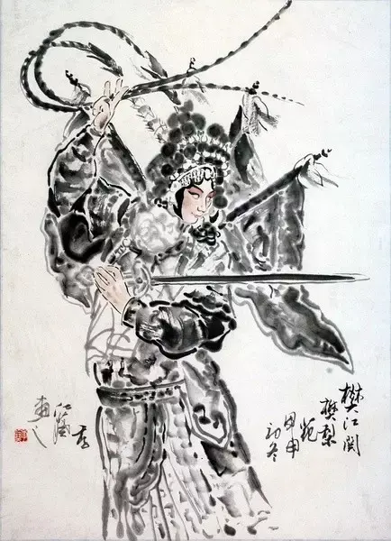
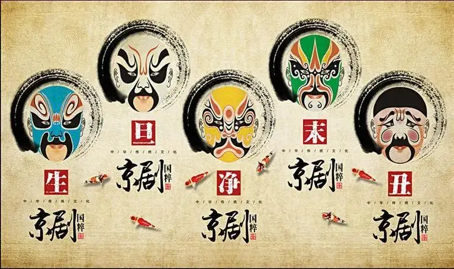
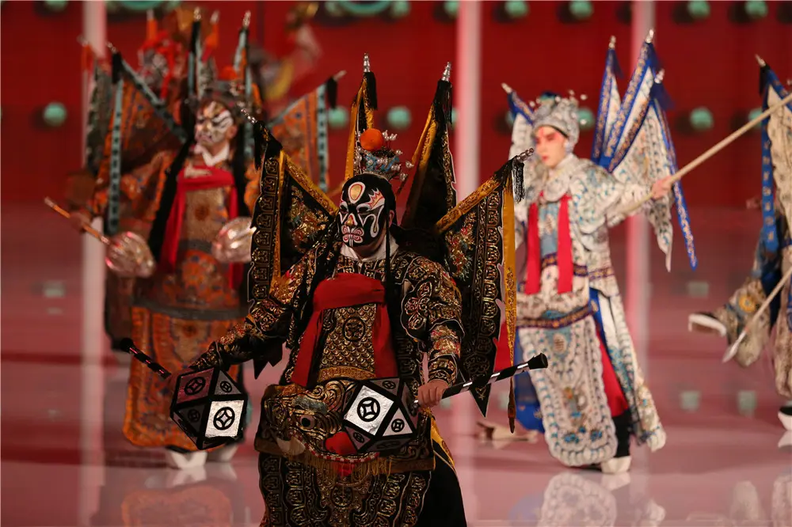
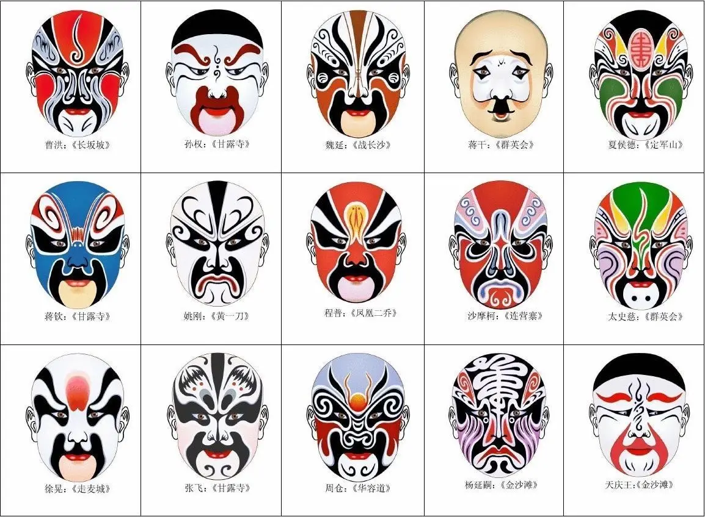
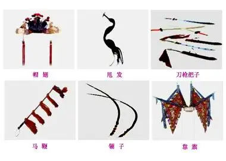

文化特征

1-表现手法
京剧表演的四种艺术手法：唱、念、做、打，也是京剧表演四项基本功。
唱指歌唱，念指具有音乐性的念白，二者相辅相成，构成歌舞化的京剧表演艺术两大要素之一的“歌”，做指舞蹈化的形体动作，打指武打和翻跌的技艺，二者相互结合，构成歌舞化的京剧表演艺术两大要素之一的“舞”。
戏曲演员从小就要从这四个方面进行训练，虽然有的演员擅长唱功（唱功老生），有的行当以做功（花旦）为主，有的以武打为主（武净）。但是要求每一个演员必须有过硬的唱、念、做、打四种基本功。只有这样才能充分地发挥京剧的艺术特色。更好地表现和刻画戏中的各种人物形象。
京剧有唱，有舞，有对白，有武打，有各种象征性的动作，是一种高度综合性的艺术。
2-行当分类

京剧行当的划分，除依据人物的自然属性（性别、年龄）和社会属性（身份、职业）外，主要是按人物的性格特征来分类。京剧班社旧有“七行七科”之说 ：七行即生行、旦行（亦称占行）、净行、丑行、杂行、武行、流行。
京剧舞台上的一切都不是按照生活里的原貌出现的。京剧舞台上的角色也不是按照生活当中人的本来面貌出现的，而是根据所扮演角色的性别、性格、年龄、职业以及社会地位等，在化妆、服装各方面加以若干艺术的夸张，这样就把舞台上的角色划分成为生、旦、净、丑四种类型。这四种类型在京剧里的专门名词叫做“行当”。
生
除了花脸以及丑角以外的男性正面角色的统称，分老生（又分重唱的安工老生，重武的靠把老生）、武生（分长靠武生、短打武生并应工猴儿戏）、小生（分扇子生、雉尾生、穷生、武小生）。
旦
女性正面角色的统称，分青衣（正旦）、花旦、闺门旦、刀马旦、武旦、彩旦、老旦。
净
俗称花脸，大多是扮演性格、品质或相貌上有些特异的男性人物，化妆用脸谱，音色洪亮，风格粗犷。“净”又分为以唱功为主的大花脸，分正净（重唱功，称铜锤、黑头）、架子花（重工架）、武二花、摔打花、油花（一称毛净）。
丑
扮演喜剧角色，因在鼻梁上抹一小块白粉，俗称小花脸。分文丑（分方巾丑、袍带丑、老丑、荣衣丑，并兼演彩旦、婆子）、武丑（又称开口跳）等。各个行当都有一套表演程式，在唱念做打的技艺上各具特色。
3-唱腔分类

京剧主要分为“西皮”与“二黄”两大类。
常见剧目中，有《四郎探母》，杨延辉唱的“未开言不由人泪流满面”就是老生的“西皮导板”，铁镜公主唱的“夫妻们打坐在皇宫院”就是青衣的“西皮导板”。西皮导板用来起头大量的唱段，比较常用。诸如此类的还有该剧中杨宗保唱的“杨宗保在马上传将令”是小生的西皮导板，《铡美案》中包拯唱的“包龙图打坐在开封府”是净行的西皮导板，《打龙袍》中国太唱的“龙驹凤辇进皇城”则是老旦的西皮导板。西皮导板种类虽然繁多，可过门基本类似，只要听熟了过门就知道演员要开唱什么板式了。如果同一出戏中导板太多，琴师会多用不同的花过门伴奏，以免产生听觉疲劳。
闷帘导板与一般导板的唱法基本一致，但是在演员没有上场的情况下先在幕后唱的，如《逍遥津》中的刘协（汉献帝）在幕内有一大段唱“父子们在宫院伤心落泪”就是闷帘导板，唱完后人物才出场。但这是二黄导板，不是西皮导板。
4-发音技巧
真嗓
亦名大嗓、本嗓。京剧演员发音方法之一。演唱时，气从丹田而出，通过喉腔共鸣，直接发出声来，称为真嗓。用真嗓发出的声音称真声。如丹田气经过喉腔时，演员将喉腔缩小，使之发出比真嗓较高的音调，则称为假嗓。真嗓与假嗓在行腔时衔接自然，不露痕迹，就能使音域宽广，高低音运转自如。京剧的生行（老生、武生、红生）、净行、丑行、老旦等行当，在演唱时均用真嗓。小生演唱用假嗓，但念白则用真假嗓结合。
假嗓
亦名小嗓、二本嗓。京剧演员发音方法之一。系与真嗓、大嗓、本嗓相对而言。用假嗓发出的声音称假声。发声时，与真嗓相比喉孔缩小，部位抬高，气流变细。假嗓发音的音调较真嗓为高。京剧的旦角、小生的演唱均用假嗓，但二者声音的刚柔力度有所不同。
左嗓
京剧声乐名词。主要指男声中一种不正常的嗓音，能高而不能低，另外声音刚而扁，圆润不足，有些专唱高调门的老生或武生，即以此嗓演唱。老生嗓音有纯粹左嗓，亦有本嗓而略带左者。另外，左嗓有时亦用作另一解释，指嗓音与伴奏乐器不合，即一般所谓的不搭调。
单击查看更多唱腔…
5-板式分类
京剧的板式是指：唱腔的-板眼结构形式。通俗的讲就是唱腔节奏。通常有四类：一眼板，三眼板，无眼板，散板。在各种声腔中，原板是变化的基础。除原板外，还有慢板、快板、导板、摇板、二六、流水板、快三眼等。
6-京剧脸谱

分类
红脸含有褒义，代表忠勇；黑脸为中性，代表猛智；蓝脸和绿脸也为中性，代表草莽英雄；黄脸和白脸含贬义，代表凶诈凶恶；金脸和银脸是神秘，代表神妖。
色画方法
京剧脸谱的色画方法，基本上分为三类：揉脸、抹脸、勾脸。脸谱最初的作用，只是夸大剧中角色的五官部位和面部的纹理，用夸张的手法表现剧中人的性格、心理和生理上的特征，以此来为整个戏剧的情节服务，可是发展到后来，脸谱由简到繁、由粗到细、由表及里、由浅到深，本身就逐渐成为一种具有民族特色的、以人的面部为表现手段的图案艺术了。
7-伴奏乐器

京剧伴奏乐器分打击乐器与管弦乐器。
打击乐器有板、单皮鼓、大锣、铙、钹等，称为“武场”。
管弦乐器有京胡、京二胡、月琴、三弦，称为“文场”。
8-舞台道具
砌末是大小道具与一些简单装置的统称，是戏曲解决表演与实物矛盾的特殊产物。砌末一词在金、元时期已有。传统戏曲舞台上的砌末包括生活用具（如烛台、灯笼、扇子、手绢、文房四宝、茶具、酒具），交通用具（如轿子、车旗、船桨、马鞭等）。武器又称刀枪把子（如各种刀、枪、剑、斧、锤、鞭、棍、棒等），以及表现环境、点染气氛的种种物件（如布城、大帐、小帐、门旗、纛旗、水旗，风旗、火旗、蛮仪器仗、桌围椅披）等。除常用的砌末之外，也可根据演出需要临时添置。